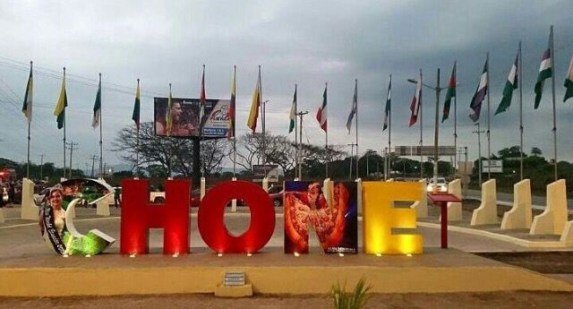
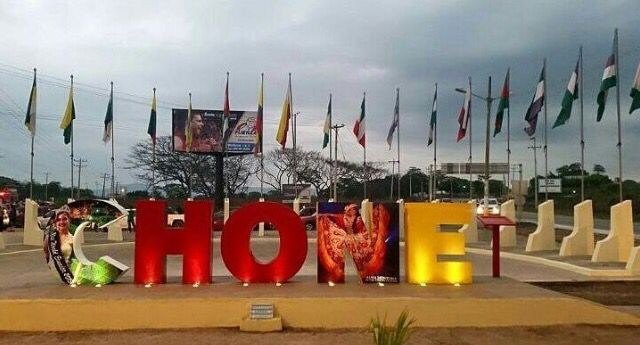

”Chone es una ciudad que se destaca por su hospitalidad, alegría popular, herencia campesina, y su profundo respeto por la tierra y las tradiciones. Las costumbres choneras reflejan una mezcla
de raíces indígenas, influencia afroecuatoriana y cultura montuvia, típicas de la región Costa.
A continuación, te detallo sus costumbres más importantes divididas por categoría:
Costumbres Campesinas y Montuvias
Chone forma parte del corazón del pueblo montuvio, y muchas de sus tradiciones están relacionadas con la vida rural:
Montuvios: Son campesinos costeños caracterizados por su sombrero de paja, machete al cinto, botas de caucho, y una forma de hablar particular. Son símbolo de identidad regional.
Trabajo en la tierra: La siembra de arroz, maíz, cacao y plátano sigue realizándose con técnicas tradicionales. Se acostumbra trabajar en "mingas", donde los vecinos se ayudan mutuamente.
Jornadas comunitarias: Después de largas jornadas de trabajo en el campo, los campesinos suelen reunirse para compartir comida, bebidas y contar historias al ritmo del amorfinito (verso cantado típico.
Las festividades en Chone son coloridas, alegres y llenas de música, bailes, gastronomía y fervor popular. Algunas de las más destacadas son:
Carnaval de Chone
Una de las celebraciones más grandes y esperadas del año.
Se realiza en febrero, con desfiles, comparsas, carros alegóricos, danzas, bandas musicales y juegos con agua.
Es común el uso de espuma, polvos de colores y bailes en las calles.
Fiestas Patronales de San Cayetano
Cada 7 de agosto, los devotos celebran al santo patrono San Cayetano, con misas, procesiones, bandas de pueblo y comidas tradicionales.
También se organizan juegos populares como carreras de saco, palo encebado y ferias artesanales.
Rodeos Montuvios
Se celebran durante ferias agrícolas o patronales.
Participan jinetes montuvios en competencias de lazo, doma de caballos, y exhibición de destrezas ganaderas.
Se acompañan con música de pasillos, pasacalles, marimba y banda.
. Gastronomía Tradicional
la comida chonera forma parte fundamental de sus costumbres.
Se comparte en fiestas, celebraciones familiares y hasta en los velorios.
Algunos platos típicos incluyen:
Bollo de pescado (envuelto en hojas de plátano con verde y maní).
Corviches
Encebollado
Tonga manabita (arroz con pollo o chancho envuelto en hojas de plátano).
Viche de camarón o pescado (una sopa espesa con maní, yuca, plátano y mariscos).
Majado de verde
Jugos de frutas tropicales como guanábana, maracuyá, naranjilla.
En las festividades se preparan grandes cantidades de comida para compartir con familiares, amigos y vecinos.
 
